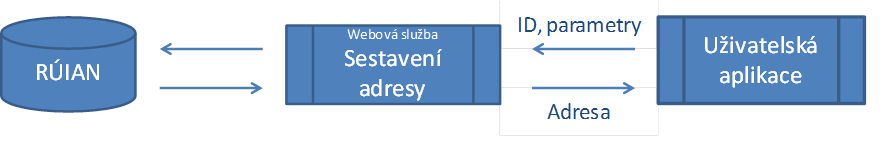

- Popis služeb
- Geokódování
- Sestavení adresy
- Fulltextové vyhledávání
- Ověření adresy
- Ověření identifikátoru adresy
- Blízké adresy
Info
V rámci vytvoření a ověření postupů popsaných v této metodice byly zprovozněny referenční služby na adrese http://www.vugtk.cz/euradin/Services. Tyto služby jsou určeny ke kontrole správné funkčnosti implementací, které budou v souladu s touto metodikou a procesů, které je využívají.

Vyhledávání adresního bodu adresního místa
Tato webová služba umožňuje klientům jednotným způsobem získat souřadnice zadaného adresního místa.
Adresní místo zadáme buď pomocí jeho identifikátoru RÚIAN nebo pomocí textového řetězce adresy.
Adresa služby:/Geocode
Formátování adresy ve standardizovaném tvaru
Tato webová služba sestavit zápis adresy ve standardizovaném tvaru podle § 6 vyhlášky č. 359/2011 Sb., kterou se provádí zákon č. 111/2009 Sb., o základních registrech, ve znění zákona č. 100/2010 Sb. Adresní místo lze zadat buď pomocí jeho identifikátoru RÚIAN, textového řetězce adresy nebo jednotlivých prvků adresy.Adresa služby:/CompileAddress

Vyhledávání adresního místa podle řetězce
Tato webová služba umožňuje nalézt a zobrazit seznam pravděpodobných adres na základě textového řetězce adresy. Textový řetězec adresy může být nestandardně formátován, nebo může být i neúplný.Adresa služby:/FullTextSearch

Ověřuje existenci dané adresy
Tato webová služba umožňuje ověřit zadanou adresu. Adresa je zadána pomocí jednotlivých prvků adresního místa.Adresa služby:/Validate

Ověřuje existenci daného identifikátoru adresy
Tato webová služba umožňuje ověřit existenci zadaného identifikátoru adresy RÚIAN v databázi.Adresa služby:/ValidateAddressId

Hledá adresu nejbližší daným souřadnicím
Tato webová služba nám umožní vyhledat adresní místa v okolí zadaných souřadnic do určité vzdálenosti. Vrací záznamy databáze RÚIAN setříděné podle vzdálenosti od zadaných souřadnic.Adresa služby:/SearchAddressPoints
